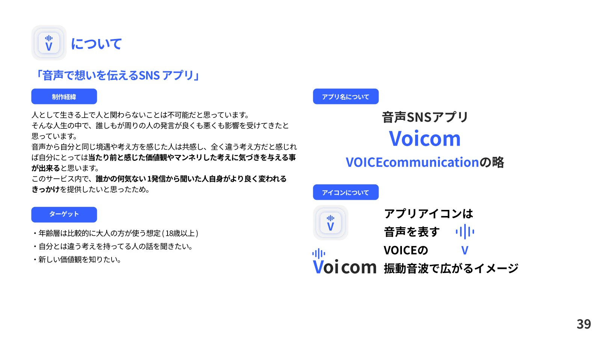
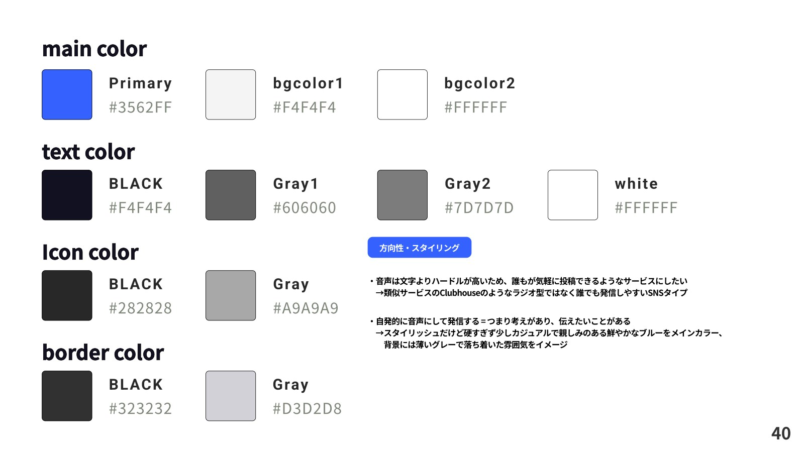
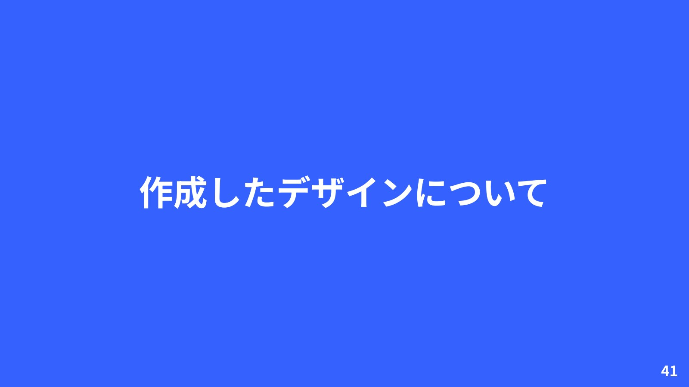
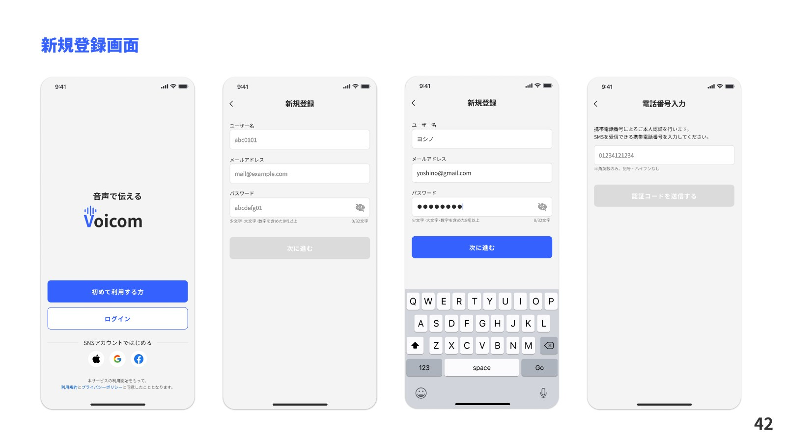
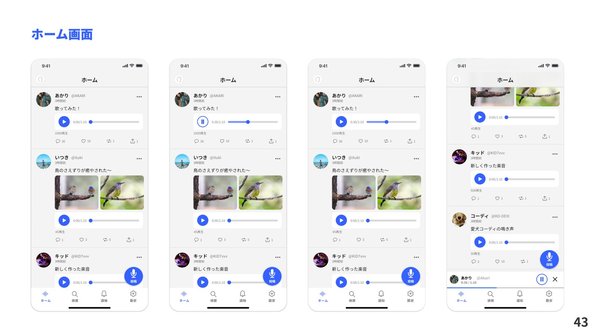
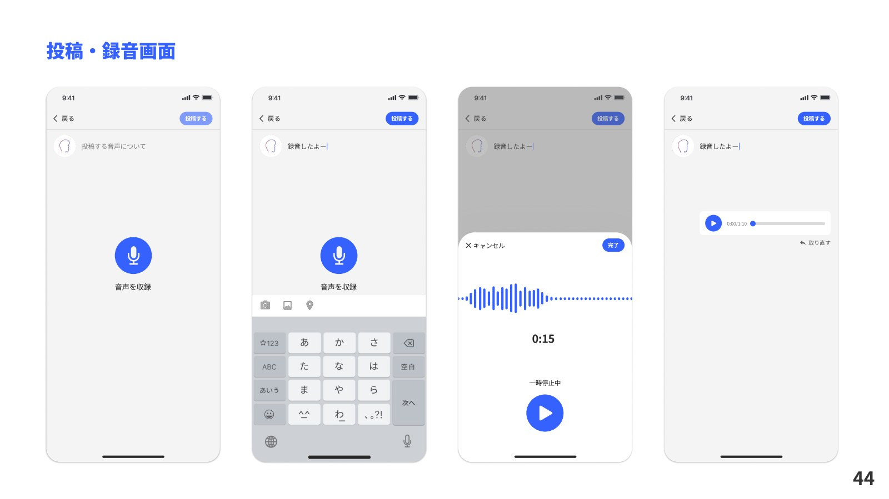
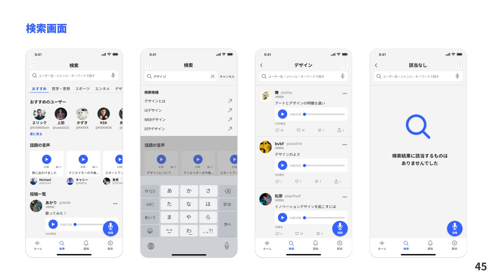

自主制作作品
音声SNSアプリ「Voicom」
「音声で想いを伝える」をテーマにしたSNSアプリ。誰かの発信が、新しい価値観や気づきにつながる体験を目指して企画・デザインしました。
担当：自主制作・サービス企画・UIデザイン
制作の背景
音声を通じて共感や異なる価値観に触れ、聞いた人がより良く変わるきっかけを提供したいと考えました。18歳以上を想定し、自分と違う考え方や新しい価値観を知りたい人に向けたサービスです。
デザインの方向性
誰もが気軽に投稿できるSNS形式を採用。鮮やかなブルーと薄いグレーを軸に、スタイリッシュさと親しみやすさを両立させました。新規登録、ホーム、投稿・録音、検索の画面を紹介します。







